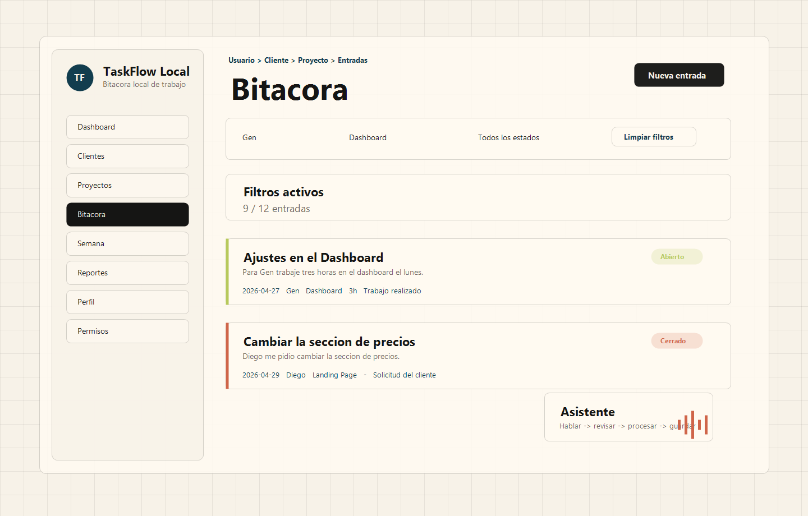

Set the frame
Strong prompts define audience, constraints, quality bar, and what not to build.
Day 01 / AI-assisted build log
One AI-assisted project per day. The feature is not always AI; the practice is prompting, iterating, and shipping with receipts.
Why it exists
Each day pairs code with the prompts, revisions, constraints, and lessons behind it. The output matters, but the working trail is the point.
Build archive
Day 02 preview

Prompting philosophy
Strong prompts define audience, constraints, quality bar, and what not to build.
The useful knowledge lives in the revisions, misses, and choices between versions.
A small finished project beats an endless concept. Code, notes, lesson, next day.
Operating rules